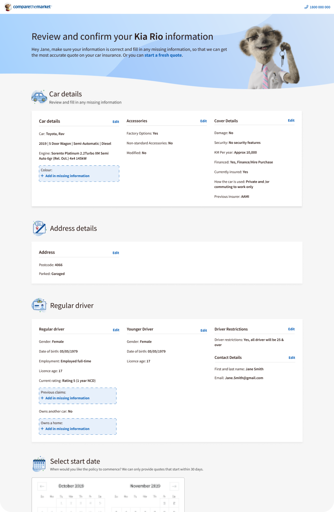
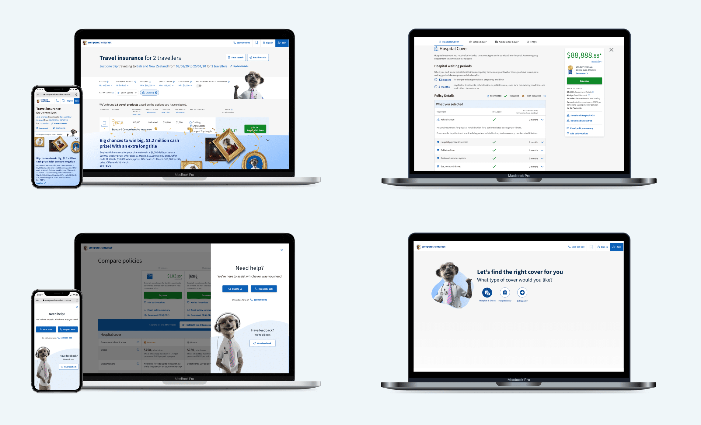

Mid UI/UX Designer at Compare the Market
Compare the Market (CTM) was a place that expanded my mind and skills from start up, where I was the sole designer to a team of eight designers, working on multi products for CTM's E2E enterprise software. When people ask me what I learnt at CTM, I reply with "what didn’t I learn?!”

My Role
My time at Compare the Market expanded over the course one and a half years. In that time I was able
to touch many projects. This included Travel insurance, Health insurance, Energy (Gas and
Electricity) and the design system.
- Designed mobile first, web second
- Generated designs and mock-ups that balance user needs with business goals and technological capabilities.
- Facilitated and advocated a user-centred design process
- Meet with internal stakeholders to understand their requirements (BA, Product Owner, General Mangers)
- Created customer segments from interviews and data
- Creating high-level user experience blueprints
- Produced high-level prototypes with Figma
- orked on multiple projects at once (Travel insurance & Energy)
- Worked on improving the customer experience and business outcomes via our website.
- Creating high-level user experience blueprints
- Oversaw the implementation of designs and worked with developers to reach the highest quality
- Presented solutions to stakeholders in a clear and compelling way

CtM Design System
An aspect of my work was working on the our design system called Bento. Making sure there was continuous contribution, documentation, education and development support of our design system. A design system is complex and there are many different ways to create and maintain components.
-
The work I did on the design system included:
- Started and ran fortnightly design system 101’s to up-skill team members from how to make a component in Figma and handover this work to the developersd
- Worked closely with Developers on components and overall governance as to what was going into the coded environment
- Assisted in establishing, promoting and maintaining UX and UI design best practice and guidelines across the business.
- Advocated for our components to be compliant with AA and AAA standards
- Documentation & How to’s for colleagues who want to create components
- Created reusable & flexible components
Health Insurance Revamp Project
Health insurance is one of those type of insurance where people don’t know if they should get it or
wonder it’s value when they do have it. It’s not as fun as Travel where people are happy to buy, as
hey are excited for their trip to the Maldives or an essential need like energy.
This project involved the redesign of the end to end journey. It was massive, yet rewarding
challenge where I produced detailed & concept designs of the quote and application forms,
calculators, result pages, product information. I worked hard to create meaningful messaging to help
users understand and educate to make sure that they got the insurance product fit for them.

Energy Redesign Project
For 8 months I worked with the energy team to help them redesign and rebuild the entire energy journey. When I jumped on board, there was a need for features that included extracting bill data to provide customers an accurate billing estimate from a provider, a concierge experience, same day electricity connection and three way product comparison. These features provided challenges, as the energy sector is one that isn’t just extremely complex but heavily regulated. During the research phase:
- Two rounds of user interviews which included features I had designed. Bill upload and a shopping cart experience for choosing gas and electricity separately.
- A/B testing
- Recruited and facilitated interviews with 20 electricity and gas users across Australia, using Askable software
- Adapted and iterated upon designs based on user feedback
- Developing a deeper understanding of CTM's Energy customers to produce engaging digital products that effectively serve our customer needs.
- Added to our evolving customer segments